Configure some pins and switches of WizFi310 to run a WizFi310_hello_world_demo example. These are D0, D1, SW5, and SW6.
D0 is used to transmit data to a target MCU(WIZwiki-W7500) and D1 is used to receive. In case of SW5, there are three pins that have own functions. 1st pin of SW5 connects A0 pin of the WizFi310 and target MCU to use CDS module. 2nd pin of SW5 connects D14 pin to use DHT11. And 3th pin of SW5 connects D9 to use for resetting the WizFi310. In case of SW6, there are two pins that have own functions. 1st pin of SW6 is D6 that is used as RTS. 2nd pin of SW6 is D7 that is used as CTS.
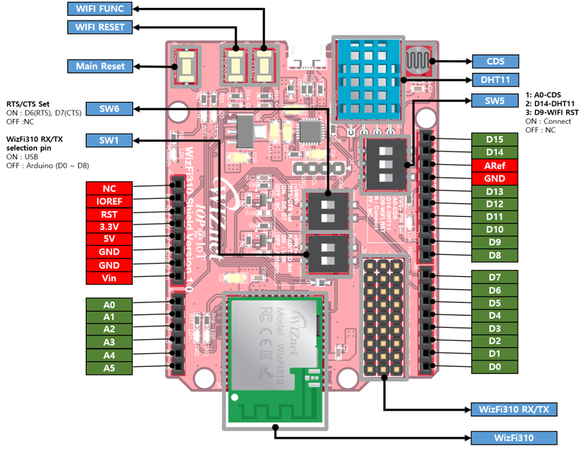
Pins’ Configuration of a Wizfi310 and target MCU(WIZwiki-W7500) are like below.
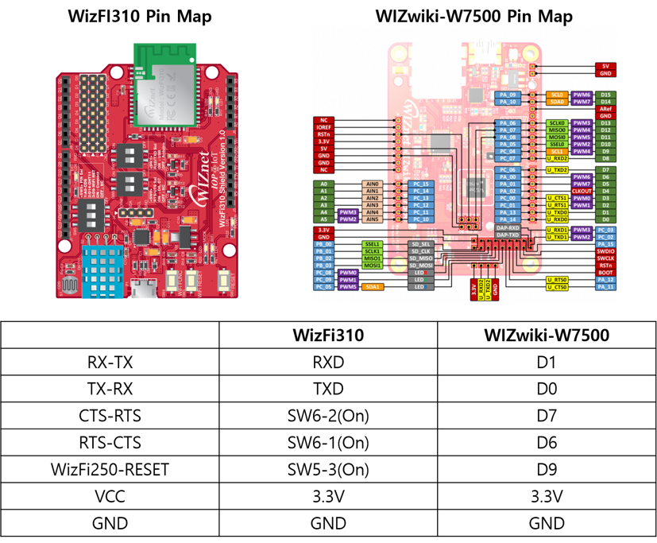
In this example, J1 of WizFi310 Shield have to be connected to D1 using jumper and J3 have to be connected to D0 as below.
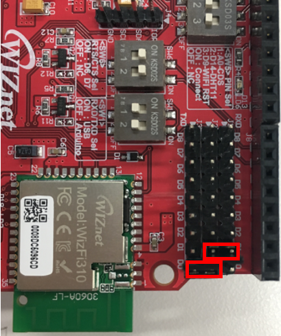
WizFi310Interface wifi(D1, D0, D7, D6, D9, NC, 115200);
#### Pin Setting
* D1 : MCU UART_TX
* D0 : MCU UART_RX
* D7 : MCU UART_RTS
* D6 : MCU UART_CTS
* D9 : WizFi310 RESET
* NC : ALARM
* 115200 : Default UART Baud Rate
Join at https://developer.mbed.org/ to use mbed compiler. Because WizFi310 acts as shield, it needs a platform board. Search “WIZwiki-W7500”, and click ‘Add to your mbed Complier’ button.
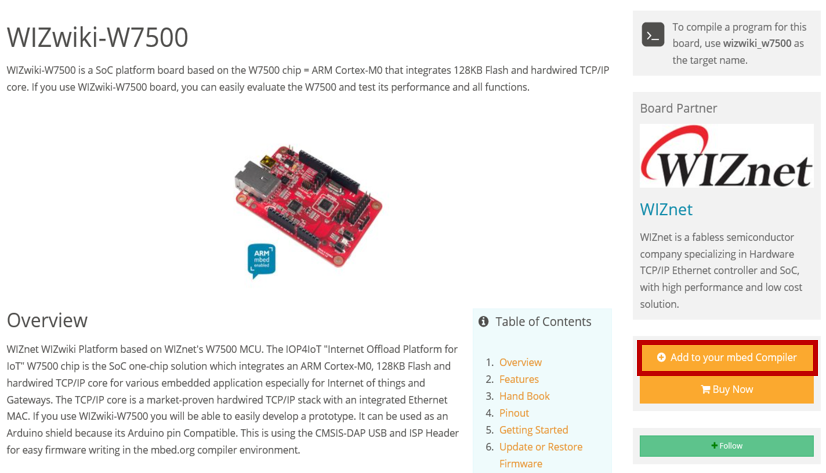
Search “WizFi310_hello_world_demo”, and then click ‘WizFi310_hello_world_demo’.
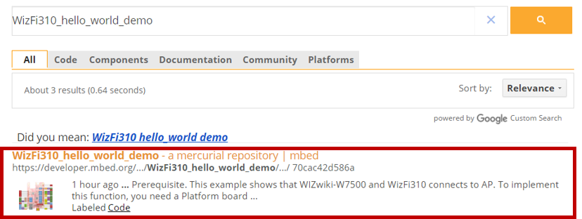
Click ‘Import into Compiler’ button to run WizFi310_hello_world_demo example.
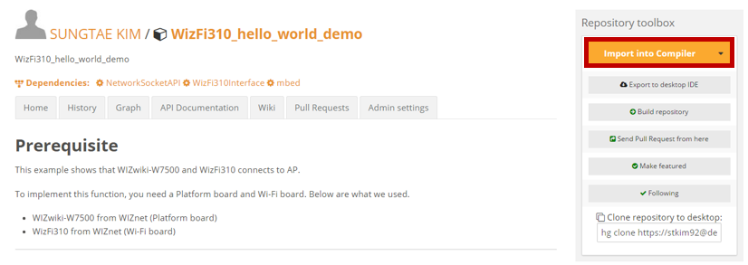
After clicking ‘Import into Compiler’ button, it will be shown below. Click ‘Import’ button.
When finishing previous steps correctly, WIZwiki-W7500 (on the right side), WizFi310_hello_world_demo example will be added.
This example shows that WizFi310 operates as station. Make an edit as follows.
/*
* Copyright (C) 2015 Wiznet, MIT License
*
* Permission is hereby granted, free of charge, to any person obtaining a copy of this software
* and associated documentation files (the "Software"), to deal in the Software without restriction,
* including without limitation the rights to use, copy, modify, merge, publish, distribute,
* sublicense, and/or sell copies of the Software, and to permit persons to whom the Software is
* furnished to do so, subject to the following conditions:
*
* The above copyright notice and this permission notice shall be included in all copies or
* substantial portions of the Software.
*
* THE SOFTWARE IS PROVIDED "AS IS", WITHOUT WARRANTY OF ANY KIND, EXPRESS OR IMPLIED, INCLUDING
* BUT NOT LIMITED TO THE WARRANTIES OF MERCHANTABILITY, FITNESS FOR A PARTICULAR PURPOSE AND
* NONINFRINGEMENT. IN NO EVENT SHALL THE AUTHORS OR COPYRIGHT HOLDERS BE LIABLE FOR ANY CLAIM,
* DAMAGES OR OTHER LIABILITY, WHETHER IN AN ACTION OF CONTRACT, TORT OR OTHERWISE, ARISING FROM,
* OUT OF OR IN CONNECTION WITH THE SOFTWARE OR THE USE OR OTHER DEALINGS IN THE SOFTWARE.
*/
#include <stdio.h>
#include "mbed.h"
#include "WizFi310Interface.h"
//#define AP_SSID "<SSID>" // Input SSID
//#define AP_PASSWORD "<PW>" // Input PW
#define AP_SECURITY NSAPI_SECURITY_WPA2
#if defined(TARGET_WIZwiki_W7500)
Serial pc(USBTX, USBRX);
WizFi310Interface wifi(D1, D0, D7, D6, D9, NC, 115200);
#endif
/**
* \brief Hello World
* \param none
* \return int
*/
int main()
{
pc.baud(115200);
printf("WizFi310 Hello World demo. \r\n");
if ( wifi.connect(AP_SSID, AP_PASSWORD, AP_SECURITY)) return -1;
printf("IP Address is %s\r\n", wifi.get_ip_address());
wifi.disconnect();
}
Click ‘Compile’ button, and save binary file.
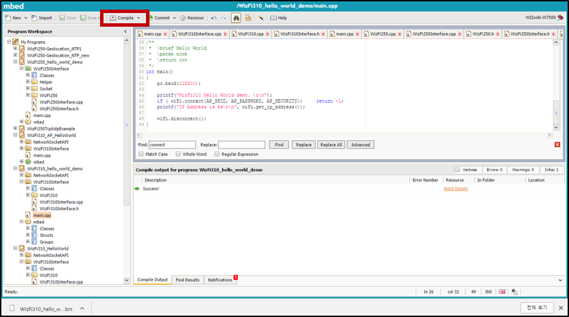
When a target MCU(WIZwiki-W7500) is connected to a PC, “Drag and Drop” the binary file to MBED(X:).
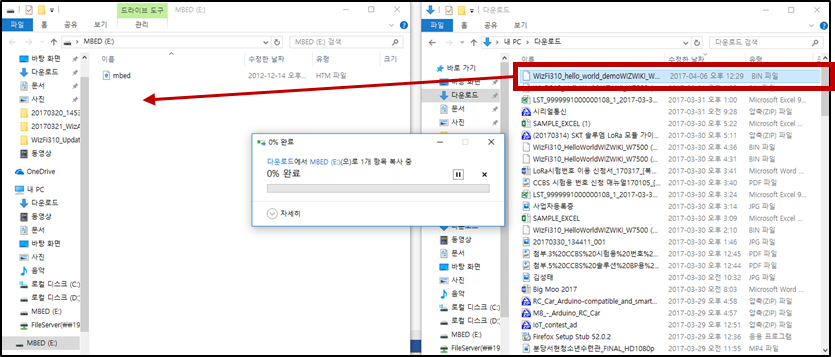
Fix Port and Baud using serial communication tools (Hercules, Token2shell), and Click ‘Open’ button.
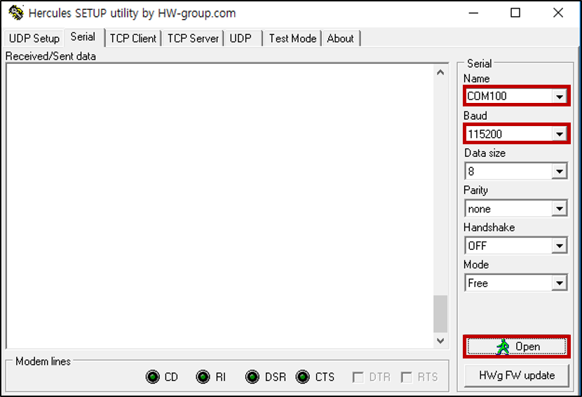
The result will be shown below. When finishing all steps, prepared to use a WizFi310.
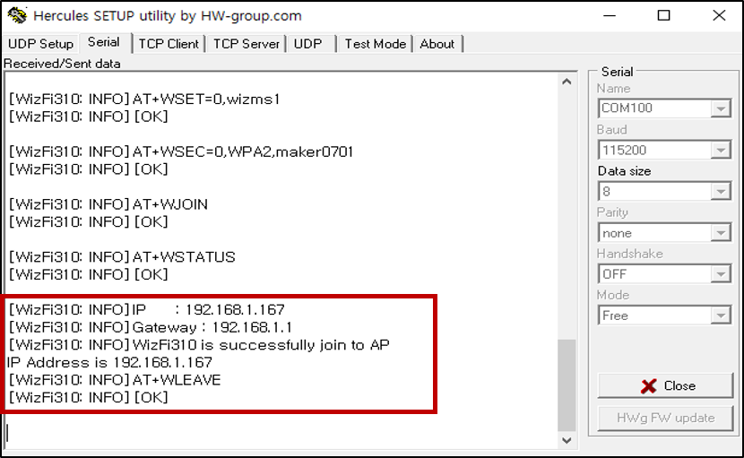
**Join at https://developer.mbed.org/.**
Search “WIZwiki-W7500”, Click ‘Add to your mbed Complier’ button.

Search “WizFi310 AP”, Click ‘WizFi310_AP_HelloWorld’.
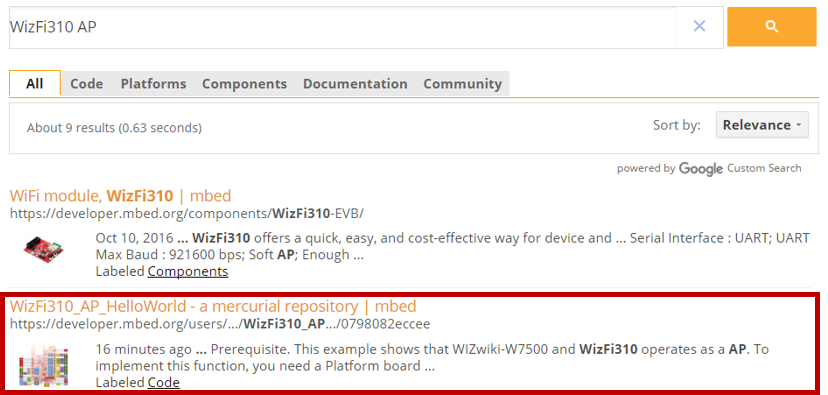
Click ‘Import into Compiler’ button to run WizFi310_AP_HelloWorld example.
After clicking ‘Import into Compiler’’ button, it will be shown below. Click ‘Import’ button.
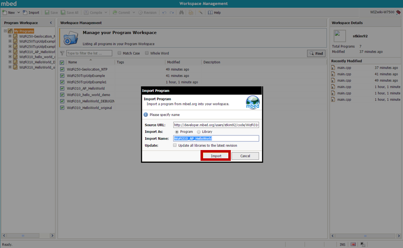
When finishing previous steps correctly, WIZwiki-W7500 (on the right side), WizFi310_AP_HelloWorld example will be added.
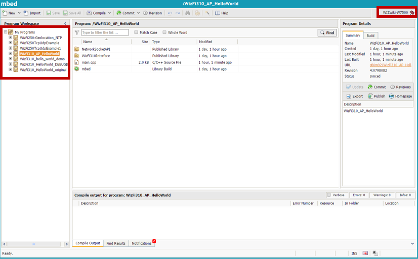
Make an edit as follows
/*
* Copyright (C) 2015 Wiznet, MIT License
*
* Permission is hereby granted, free of charge, to any person obtaining a copy of this software
* and associated documentation files (the "Software"), to deal in the Software without restriction,
* including without limitation the rights to use, copy, modify, merge, publish, distribute,
* sublicense, and/or sell copies of the Software, and to permit persons to whom the Software is
* furnished to do so, subject to the following conditions:
*
* The above copyright notice and this permission notice shall be included in all copies or
* substantial portions of the Software.
*
* THE SOFTWARE IS PROVIDED "AS IS", WITHOUT WARRANTY OF ANY KIND, EXPRESS OR IMPLIED, INCLUDING
* BUT NOT LIMITED TO THE WARRANTIES OF MERCHANTABILITY, FITNESS FOR A PARTICULAR PURPOSE AND
* NONINFRINGEMENT. IN NO EVENT SHALL THE AUTHORS OR COPYRIGHT HOLDERS BE LIABLE FOR ANY CLAIM,
* DAMAGES OR OTHER LIABILITY, WHETHER IN AN ACTION OF CONTRACT, TORT OR OTHERWISE, ARISING FROM,
* OUT OF OR IN CONNECTION WITH THE SOFTWARE OR THE USE OR OTHER DEALINGS IN THE SOFTWARE.
*/
#include <stdio.h>
#include "mbed.h"
#include "WizFi310Interface.h"
#if defined(TARGET_WIZwiki_W7500)
Serial pc(USBTX, USBRX);
WizFi310Interface wifi(D1, D0, D7, D6, D9, NC, 115200);
#endif
#define AP_SSID "<SSID>" // Input SSID
#define AP_PASSWORD "<PW>" // Input PW
#define AP_SECURITY NSAPI_SECURITY_WPA2
#define AP_Mode 1
#define STATION 0
/**
* \brief Hello World
* \param none
* \return int
*/
int main()
{
pc.baud(115200);
printf("WizFi310 Hello World demo. \r\n");
wifi.init("192.168.100.1","255.255.255.0","192.168.100.1");
if ( wifi.connect(AP_SSID, AP_PASSWORD, AP_SECURITY, AP_Mode)) return -1; // AP mode
//if ( wifi.connect(AP_SSID, AP_PASSWORD, AP_SECURITY, STATION)) return -1; // Station
printf("IP Address is %s\r\n", wifi.get_ip_address());
wifi.disconnect();
}
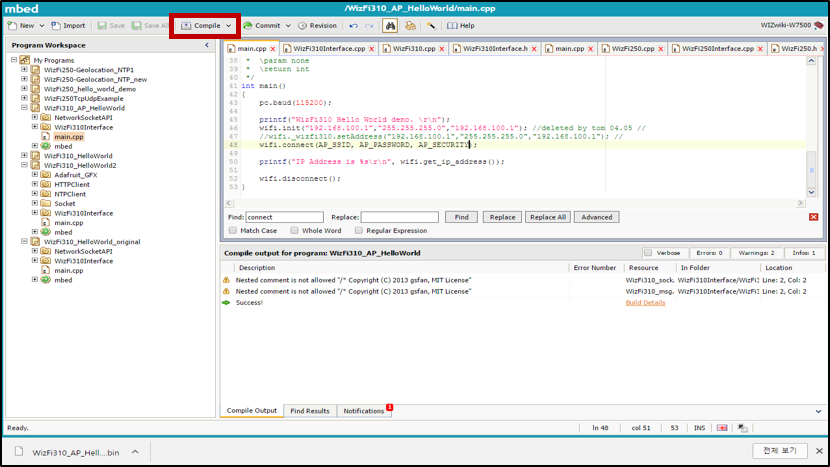
When connecting WIZwiki-W7500 and PC, “Drag and Drop” the binary file to MBED(X:).
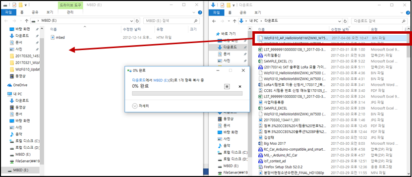
When fixing Port and Baud using serial communication tools (Hercules, Token2shell), and Click ‘Open’ button.
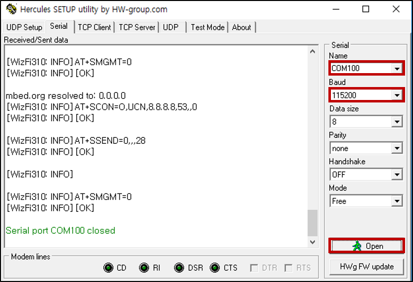
The result will be shown below.
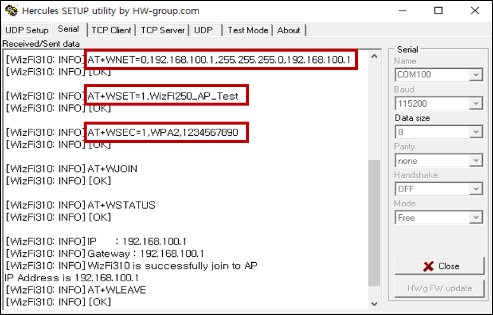